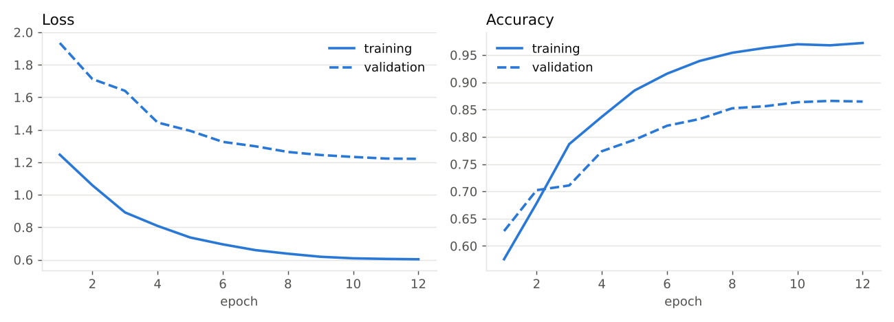
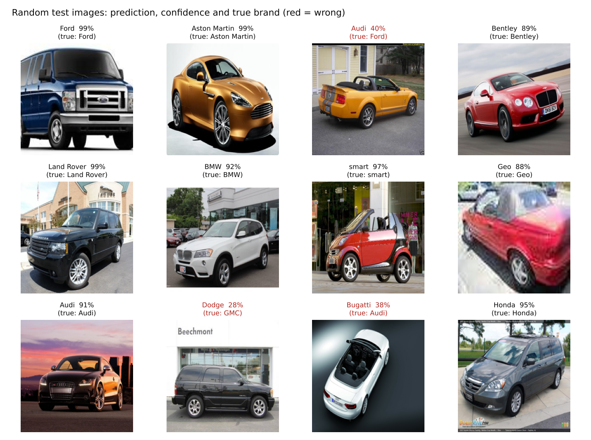
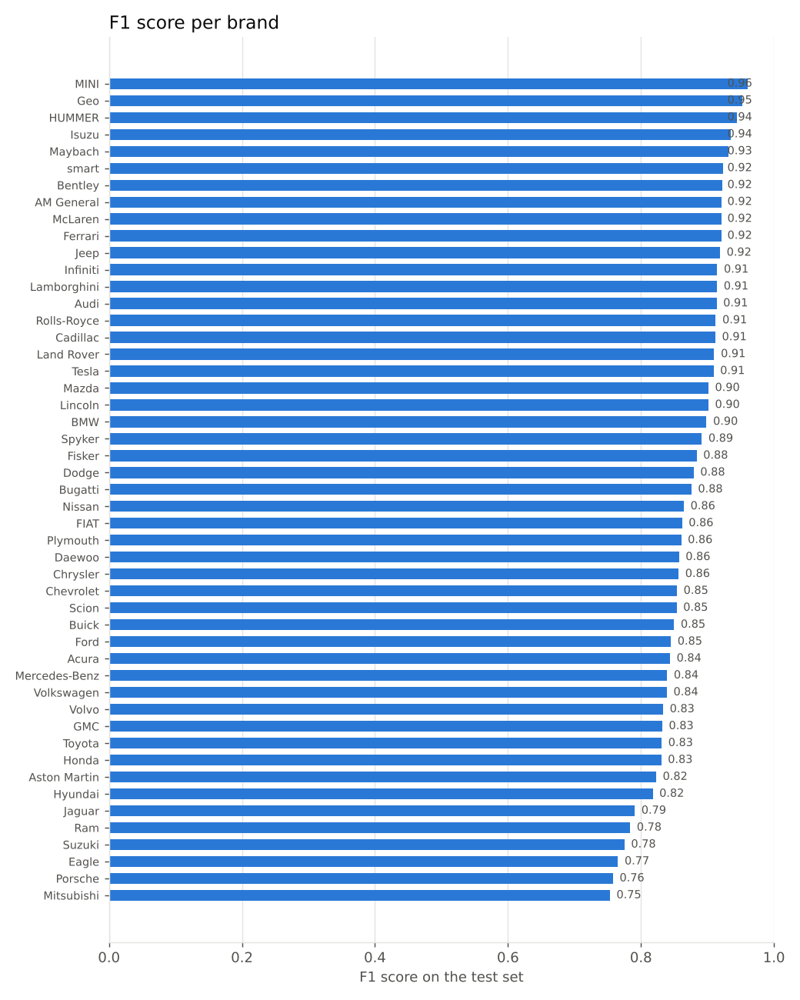
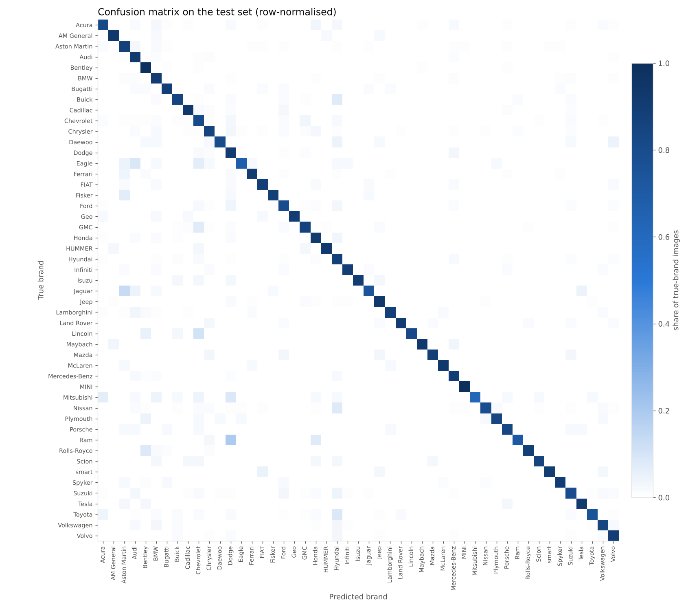

Which brand made this car?
A deep-learning model that looks at a photo and names the car's brand, from 49 makes such as Audi, BMW, Ferrari, Toyota and Tesla. Deep Learning semester project.
Try it
Upload a photo of a car, or tap an example. The model runs inside your browser (ONNX Runtime Web), so the image never leaves your device.
Drop a car photo here
Or try an example from the test set:
Loading model…
The model knows only the 49 brands listed below, and was trained on photos of mostly 2000-2012 model-year cars. Newer or rarer cars, and photos without a car, can give wrong answers.
Dataset & code
Dataset: Stanford Cars
Secondary dataset (Krause et al., 3dRR 2013): 16,185 photos of cars labelled with make, model and year (196 classes). We keep only the make, which turns it into a 49-brand recognition task.
| Split | Images | Used for |
|---|---|---|
| Train | 7,331 | learning |
| Validation | 813 | 10% of each brand's train images; picks the best epoch |
| Test | 8,041 | official test split, never used in training |
Source: Stanford Cars dataset page. Images are for non-commercial research use; they are not redistributed here, except a few examples.
Code
Everything is open source in the GitHub repository, including the trained weights.
src/prepare_data.py | labels to brands, caches images |
src/train.py | transfer learning + fine-tuning |
src/evaluate.py | test metrics and figures |
src/export_onnx.py | Keras to ONNX |
src/predict.py | command-line predictions |
models/ | trained weights (.keras, .onnx) |
The 49 brands (images in the dataset)
Model
Transfer learning: an EfficientNetV2-B0 network pre-trained on ImageNet already knows edges, shapes and textures. We teach it to tell car brands apart in two stages.
Stage 1: linear probe
Backbone frozen, only the final layer is trained on its features. Quick baseline: 60.4% test accuracy.
Stage 2: fine-tuning
Upper blocks unfrozen (189 layers) and trained for 12 epochs with augmentation. Final: 86.8%.
Training details
| Optimiser | AdamW, weight decay 1e-4, peak learning rate 2e-4, 1 warm-up epoch then cosine decay |
| Loss | Cross-entropy with label smoothing 0.1; class weights ∝ (median count / count)0.5 to soften imbalance |
| Augmentation | horizontal flip, rotation ±4%, shift 8%, zoom, brightness, contrast |
| Batch size / epochs | 32 / 12 (best epoch chosen on validation accuracy) |
| Hardware | CPU only (4 cores) |
| Deployed model | ONNX, 24 MB, takes raw 0-255 pixels, no extra preprocessing |
Results
All numbers are on the 8,041 official test photos, which the model never saw in training.




Most common mix-ups
| True brand | Predicted as | Photos |
|---|---|---|
| Chevrolet | GMC | 31 |
| Chevrolet | Dodge | 22 |
| Ford | Dodge | 20 |
| Chevrolet | Hyundai | 18 |
| Dodge | Mercedes-Benz | 18 |
| GMC | Chevrolet | 17 |
| Ford | Hyundai | 15 |
| Toyota | Hyundai | 14 |
| Nissan | Hyundai | 13 |
| Chevrolet | Ford | 12 |
Per-brand scores
| Brand | Train images | Test images | Precision | Recall | F1 |
|---|---|---|---|---|---|
| MINI | 37 | 36 | 0.92 | 1.00 | 0.96 |
| Geo | 45 | 44 | 1.00 | 0.91 | 0.95 |
| HUMMER | 83 | 82 | 0.96 | 0.93 | 0.94 |
| Isuzu | 40 | 40 | 0.97 | 0.90 | 0.94 |
| Maybach | 29 | 29 | 0.93 | 0.93 | 0.93 |
| smart | 40 | 40 | 0.95 | 0.90 | 0.92 |
| Bentley | 238 | 234 | 0.87 | 0.98 | 0.92 |
| AM General | 45 | 44 | 0.91 | 0.93 | 0.92 |
| McLaren | 44 | 44 | 0.91 | 0.93 | 0.92 |
| Ferrari | 164 | 162 | 0.94 | 0.90 | 0.92 |
| Jeep | 220 | 218 | 0.90 | 0.94 | 0.92 |
| Infiniti | 67 | 66 | 0.94 | 0.89 | 0.91 |
| Lamborghini | 161 | 158 | 0.95 | 0.88 | 0.91 |
| Audi | 589 | 580 | 0.91 | 0.92 | 0.91 |
| Rolls-Royce | 114 | 112 | 0.94 | 0.88 | 0.91 |
| Cadillac | 129 | 128 | 0.89 | 0.93 | 0.91 |
| Land Rover | 86 | 84 | 0.92 | 0.90 | 0.91 |
| Tesla | 39 | 38 | 0.90 | 0.92 | 0.91 |
| Lincoln | 39 | 39 | 1.00 | 0.82 | 0.90 |
| Mazda | 36 | 36 | 0.91 | 0.89 | 0.90 |
| BMW | 531 | 524 | 0.89 | 0.90 | 0.90 |
| Spyker | 88 | 87 | 0.89 | 0.90 | 0.89 |
| Fisker | 44 | 43 | 0.88 | 0.88 | 0.88 |
| Dodge | 630 | 623 | 0.85 | 0.91 | 0.88 |
| Bugatti | 77 | 75 | 0.86 | 0.89 | 0.88 |
| Nissan | 171 | 170 | 0.96 | 0.79 | 0.86 |
| FIAT | 62 | 60 | 0.84 | 0.88 | 0.86 |
| Plymouth | 44 | 44 | 0.88 | 0.84 | 0.86 |
| Daewoo | 45 | 45 | 0.92 | 0.80 | 0.86 |
| Chrysler | 260 | 256 | 0.86 | 0.85 | 0.86 |
| Chevrolet | 905 | 894 | 0.90 | 0.81 | 0.85 |
| Scion | 42 | 41 | 0.85 | 0.85 | 0.85 |
| Buick | 158 | 156 | 0.85 | 0.85 | 0.85 |
| Ford | 521 | 514 | 0.90 | 0.80 | 0.84 |
| Acura | 242 | 240 | 0.87 | 0.82 | 0.84 |
| Mercedes-Benz | 261 | 257 | 0.79 | 0.89 | 0.84 |
| Volkswagen | 132 | 131 | 0.82 | 0.85 | 0.84 |
| Volvo | 131 | 129 | 0.78 | 0.89 | 0.83 |
| GMC | 238 | 235 | 0.80 | 0.86 | 0.83 |
| Toyota | 168 | 164 | 0.93 | 0.75 | 0.83 |
| Honda | 161 | 160 | 0.76 | 0.92 | 0.83 |
| Aston Martin | 157 | 157 | 0.78 | 0.87 | 0.82 |
| Hyundai | 438 | 433 | 0.77 | 0.88 | 0.82 |
| Jaguar | 47 | 46 | 0.85 | 0.74 | 0.79 |
| Ram | 41 | 41 | 0.88 | 0.71 | 0.78 |
| Suzuki | 167 | 166 | 0.76 | 0.79 | 0.78 |
| Eagle | 46 | 46 | 0.89 | 0.67 | 0.77 |
| Porsche | 44 | 43 | 0.69 | 0.84 | 0.76 |
| Mitsubishi | 48 | 47 | 0.97 | 0.62 | 0.75 |
Limitations
- Brand-level labels come from the make of 196 specific models; several brands are represented by a single model (for example Tesla Model S 2012), so other models of that brand may be missed.
- Most photos show cars from 2000-2012. New designs and heavy modifications are out of distribution.
- The model has no "not a car" or "unknown brand" class; it always names one of the 49 brands, so low confidence is the signal to distrust it.